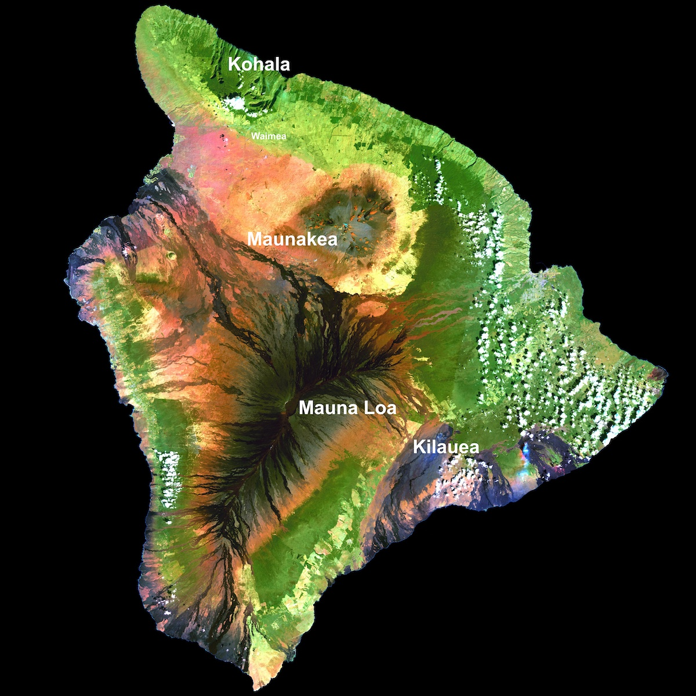
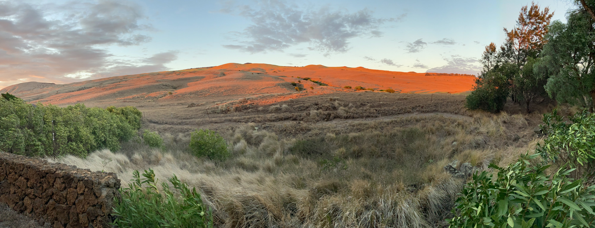
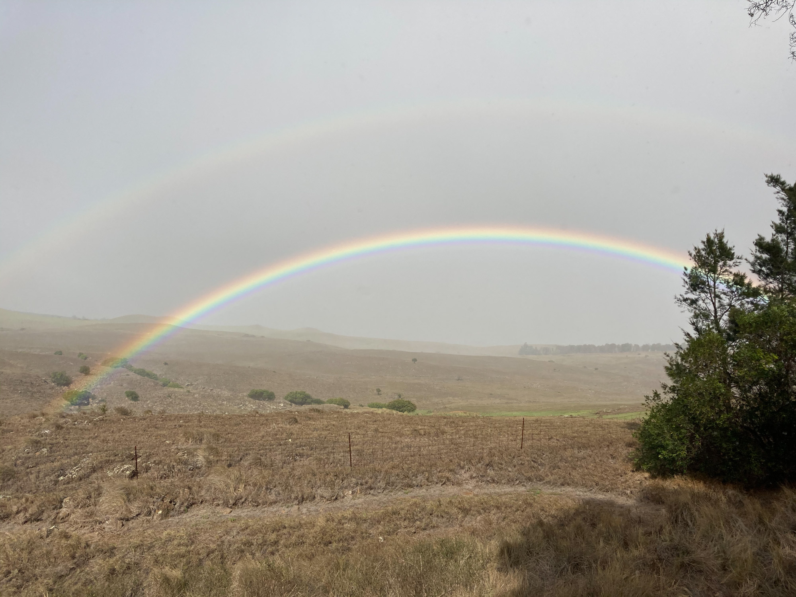
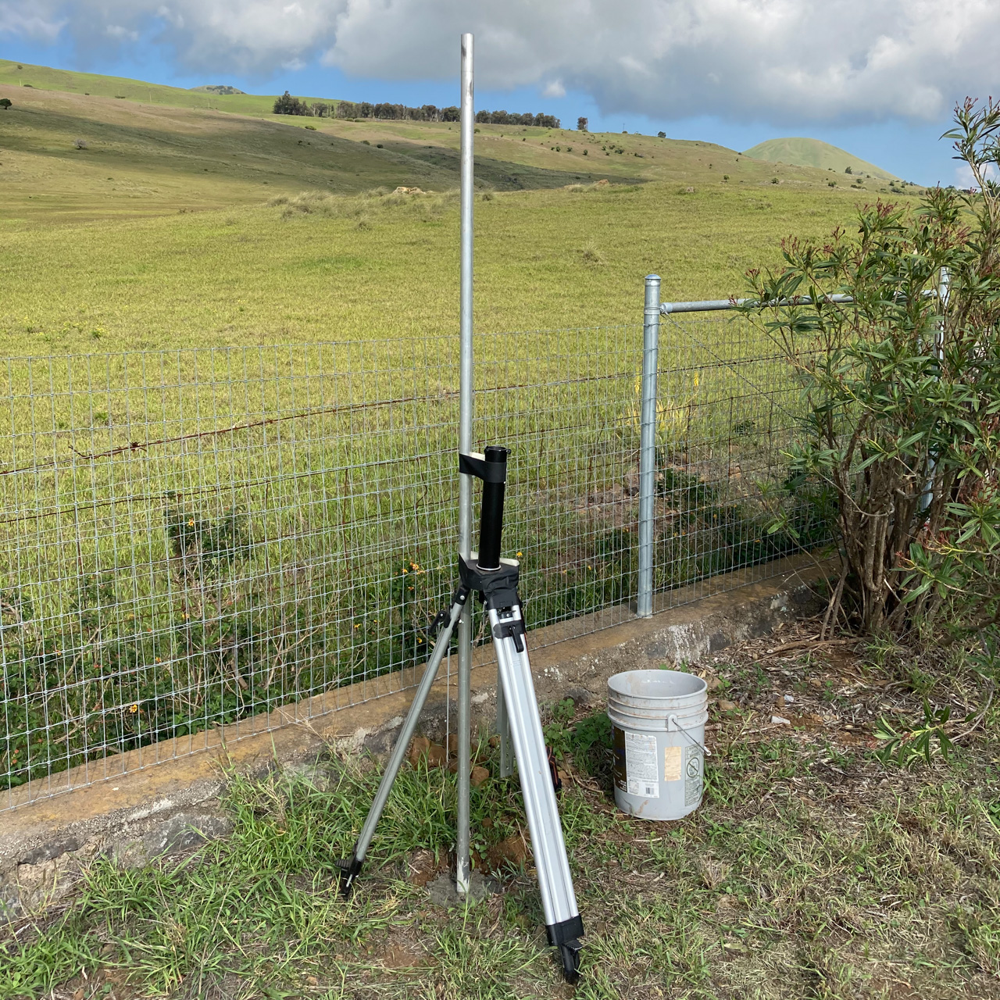

Over the 5 years I've lived in this house, I've found that I have a decent amount of clear skies. It's not the summit of Maunakea, but it is enough to be useful. On the other hand, wind and blowing rain will likely be a major problem for an observatory. I live on the "dry side" of the town of Waimea on the Big Island of Hawaii. Waimea sits in the saddle between Maunakea and Kohala, so the prevailing trade winds are often funneled through this area and blow steadily. Winds routinely average 20 mph with gusts to 30+ mph.
The banner photo above looks out of the back of my property toward the Kohalas. You can see the influence of the wind on the tree line to the left, but you can also see I have no development on that side of the house which keeps the skies dark.
In addition to wind shaking the telescope and blurring the image, the winds often carry misty rain. As the trade winds blow moisture up against the mountain slopes, it precipitates out as rain. This is why Hilo and the Hamakua coast are so lush and green. As a result, the leeward areas of Kawaihae and Waikoloa Village are very dry.

A Landsat image of the Big Island (courtesy of NOAA/NASA) with labels added by me indicating the mountains on the island and the town of Waimea where I live.
The Landsat image above shows this beautifully. The dark green areas show where there is heavy rainfall and lush vegetation. Rainfall in the Kohala mountains has carved out dramatic valleys on the windward side. My house lies West of Waimea near where the slopes of Maunakea and Kohala meet and right at the boundary between the green and brown areas in the Landsat image.
The mist and rain on the wet side of the mountains can be carried by the wind over to where I am even when it is clear overhead.

The Kohala Mountains
The blowing rain means we get rainbows on an almost daily basis.

Rainbows in front of the Kohalas.
After watching the weather here for several years I know that I get clear skies -- enough to make an observatory useful, but the problem will be that wind. As a result, I'll have to design the observatory to handle wind and make sure it can close reliably if the wind carries rain.
One of my first steps in planning was to install a decent weather station. I've had an astronomy specific weather station (an AAG Cloudwatcher) with an anemometer attached to the house for a while, but that had to come down when the house was painted. The wind readings from it were not reliable anyway thanks to where I'd mounted it on the corner of the house. The wind readings were extreme due to the air moving over the corner of the roof. I couldn't move the station far from the house because it needs a hardwired connection to a computer and power. Deploying the AAG in a better spot will have to wait until the observatory is done and providing a safe space for the computer it needs.
Instead, I recently installed a weather station (a Davis Vantage Vue) out at the edge of the property where it would get a better measure of the wind. The Vantage Vue has a built in solar panel, battery, and wireless communication, so positioning it reasonably far from the house becomes possible.
To install the weather station, I used an 8 foot section of aluminum pipe that I'd bought for this process (the Davis has a built in pole mount). I dug out a hole roughly 16 inches deep and 10 inches across and set the pole in concrete. While the concrete set, I used a spare "surveyor's tripod" and some gaffer tape to prevent the pole from tipping over.

Bracing the pole for the weather station while the mortar set.
Once the concrete had set, I attached the weather station, aligned it to North and I'm now getting much more reliable wind data.
In addition to the full Davis weather station, I also have a BloomSky. This is a small weather station which has only a few basic sensors, but provides a wide angle image of the sky (daytime only).
Here's a link to my Kamuela View weather station on WeatherLink (requires a free WeatherLink account to view) and my BloomSky.